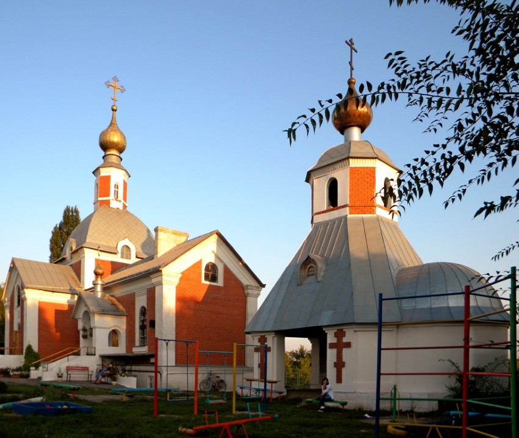
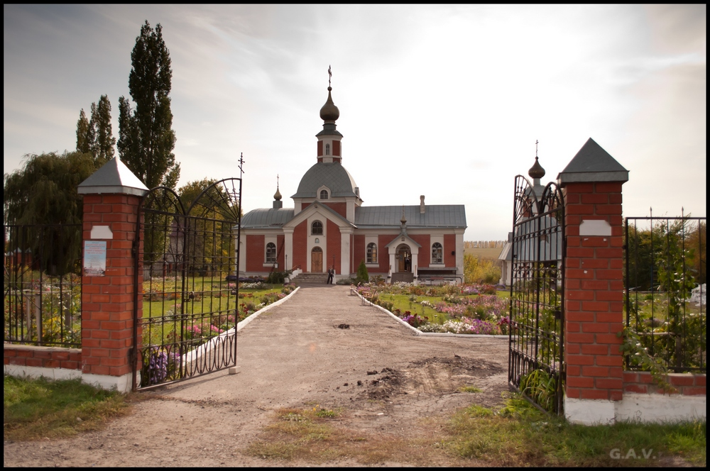
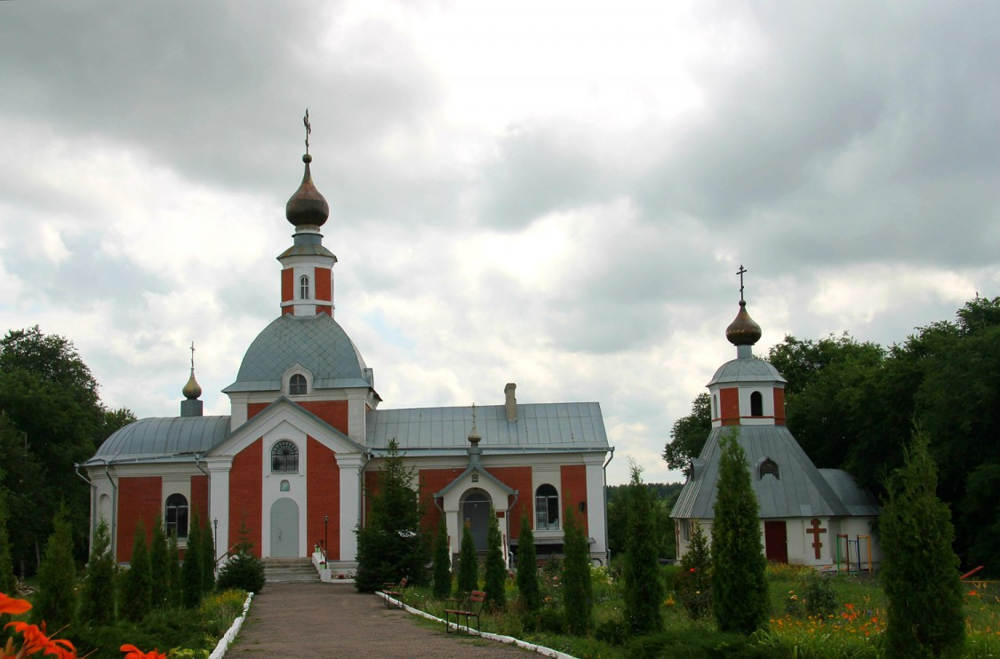
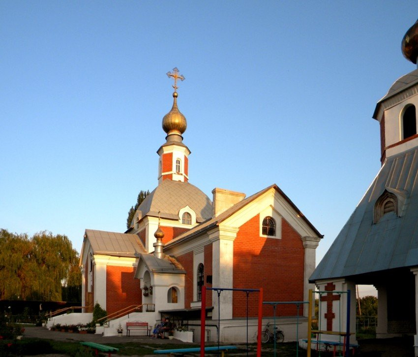
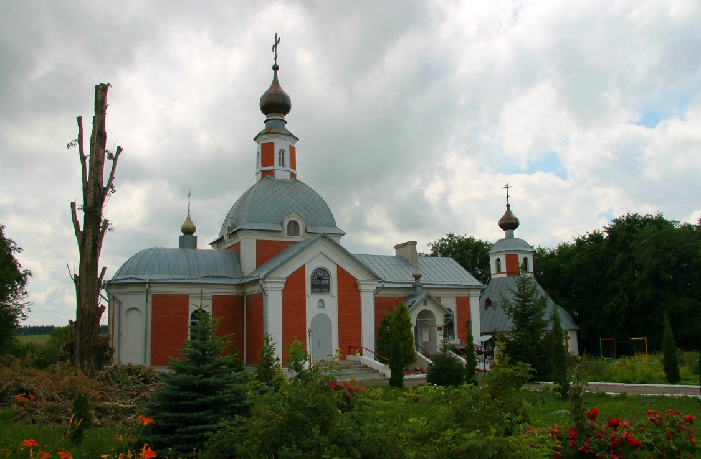
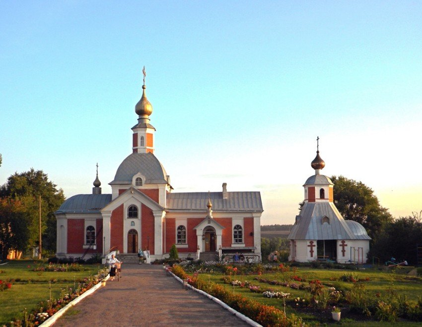
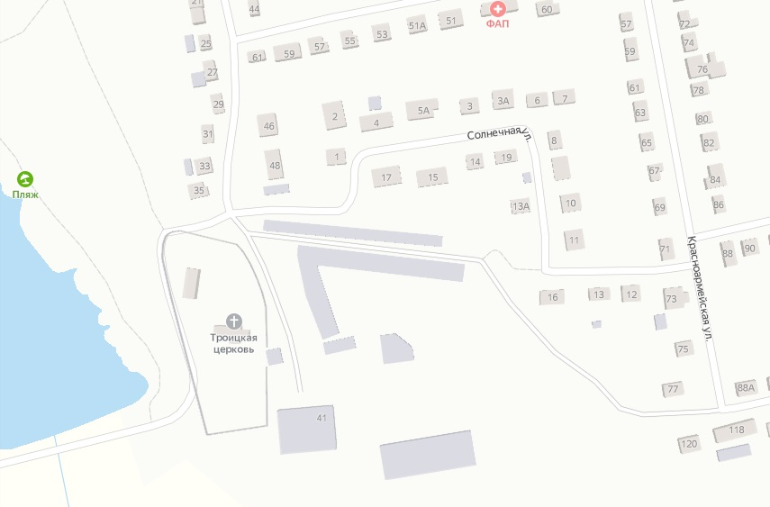

Церковь Троицы Живоначальной (посёлок Латная)
../
Телефон: +7 (47372) 6-33-57
E-mail: semilukskoe_blagochinie_vob@mail.ru
Сайт храма
Россия, Воронежская область, Семилукский район, рабочий посёлок Латная, улица Первомайская, дом 37

Митрополия: Воронежская
Епархия: Воронежская и Лискинская
Благочиние: Семилукское
Дата основания: 1998 год
Архитектор: А.Г. Федорец
Престол: Троицы Живоначальной
Состояние: новопостроенная
Реликвии и святыни храма
Иверская икона Божией Матери
Икона святителя Митрофана со святыми мощами
Два мощевика со святыми мощами, в том числе перподобного Амвросия Оптинского, мученика младенца Вифлеемского, мученика Гавриила Белостокского.
Латная, как поселение, возникло в 1887 году, стоящая на этом месте деревенька называлась Латненские дворики. В 1894 году рядом с ней прошла железная дорога, возник полустанок, названный по селу — Латная. В 1900 году на станции было 3 двора и 18 жителей. До 1923 года поселение территориально входило в состав Землянского уезда Воронежской губернии.
О своей церкви в поселке задумались только в девяностые годы. В близлежащих населенных пунктах уже были вновь открыты старинные храмы, строились новые. И жители Латной ездили на соборную молитву в окрестные церкви: кто в Девицу, кто в Подклетное, кто в Семилуки, а кто и в Воронеж.
Приход был основан в 1994 году, тогда же произведена закладка фундамента храма. Церковь построили за три года. Работы велись до 1998 года включительно. Храм был построен исключительно по инициативе жителей посёлка и благодаря их трудам.
По замыслу проектировщика Анатолия Григорьевича Федорца, одновременно в храме могут поместиться до 200 молящихся. Храм построен в виде креста. Его высота – 22 метра. Колокольня построена отдельно, рядом с церковью, имеет форму шатра. На храме один основной купол и два декоративных (над входом и алтарной частью). Внутри церковь украшена иконами, частично рукописными. Росписей нет. Резной деревянный иконостас также заполнен рукописными иконами.
До декабря 2004 года настоятелями Троицкой церкви были священники Владимир Павлович Чичерин и Георгий Юрьевич Калинин. С конца 2004 года здесь несет свое служение иерей Константин Константинович Кривонос, переведенный из Никольского храма Воронежа.
10 июля 2011 года Митрополит Воронежский и Борисоглебский Сергий совершил Великое освящение храма в честь Живоначальной Троицы поселка Латная. В дар храму Владыка Сергий пожаловал икону Пресвятой Богородицы. В данный момент при храме ведётся строительство колокольни.